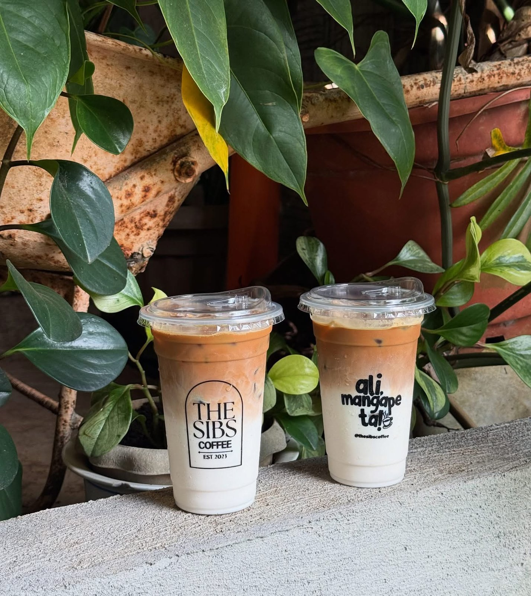
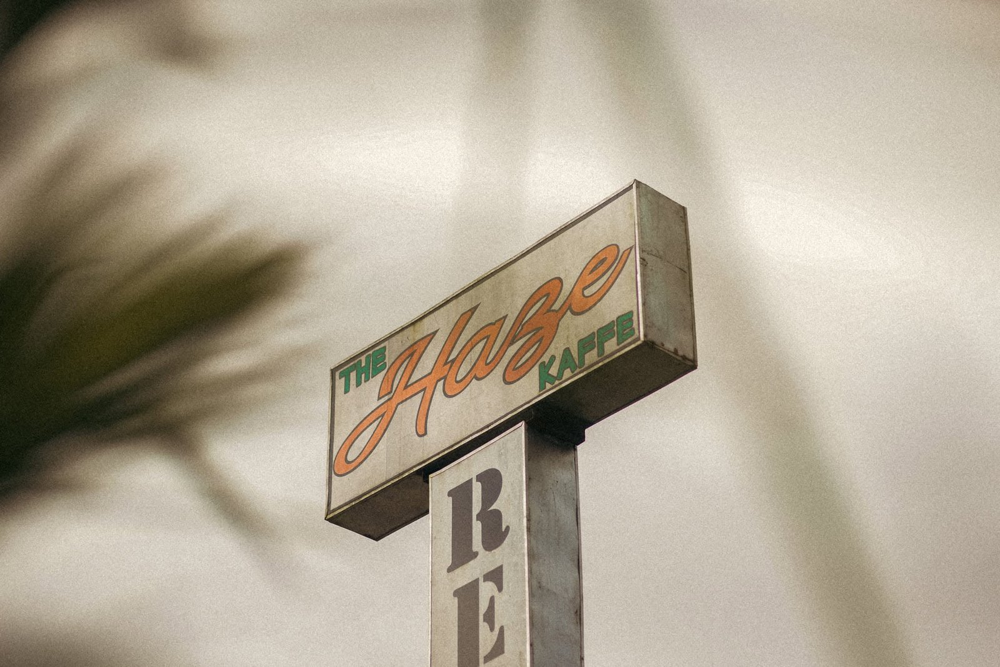
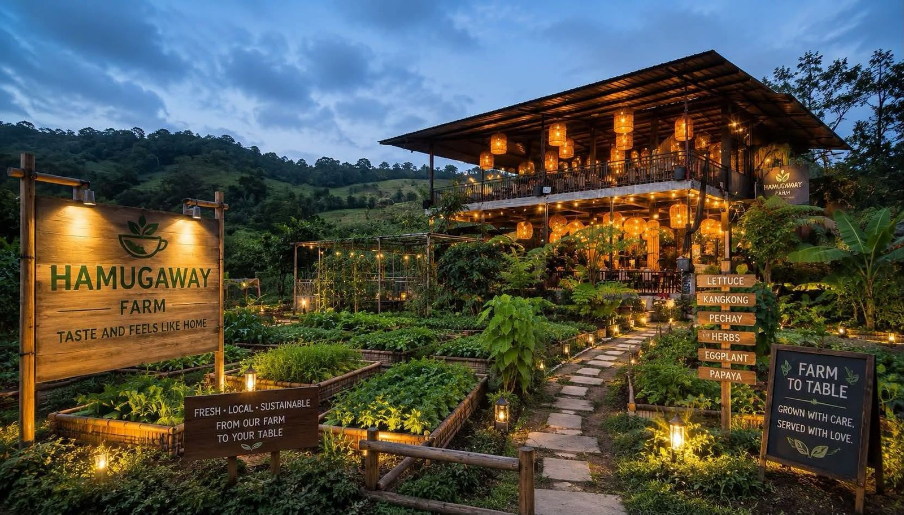
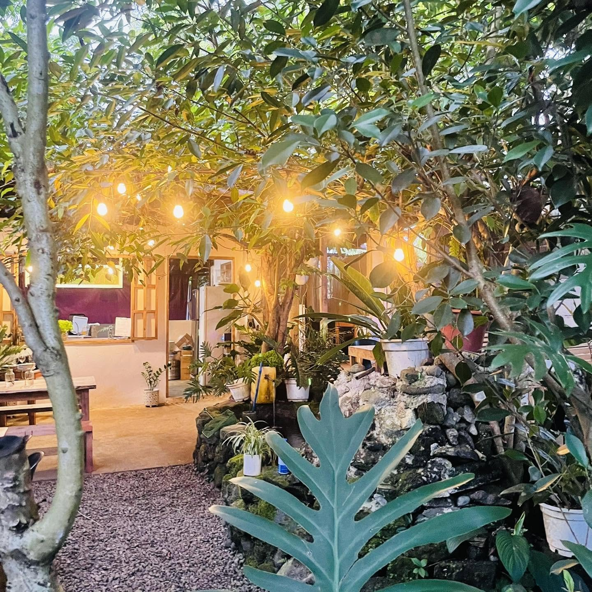
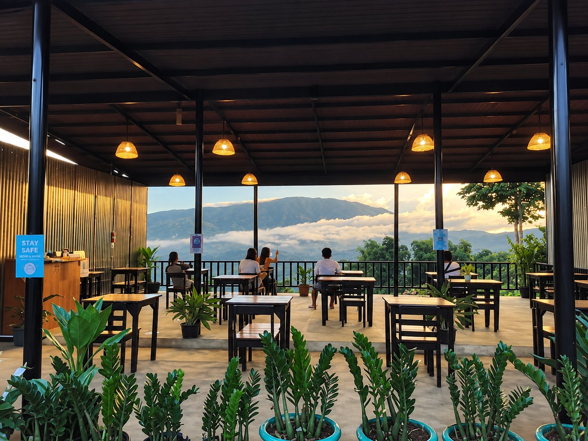
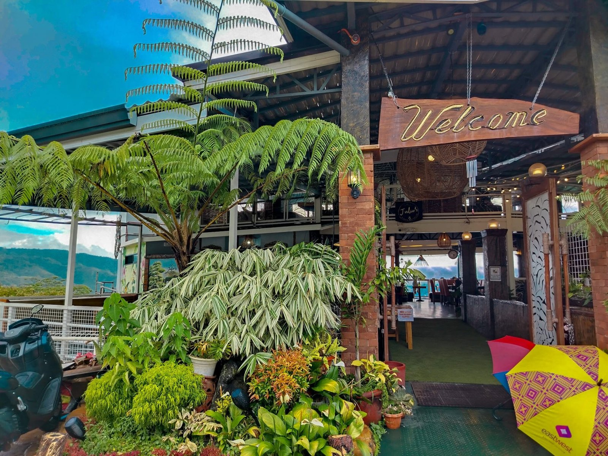
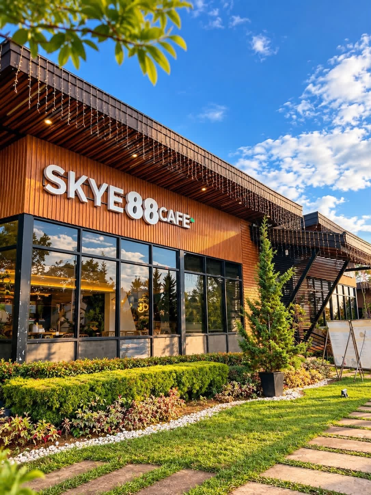

Explore Claveria
12 places
Coffee Shops & Restaurants
Café stops and resto-bars perfect for breaks along Route 955.
 4 photos
4 photosJaCo's Stopover
Garden stopover for coffee, pasta & local delicacies Zone 1, Barangay Luna, Route 955, Claveria 5 photos
5 photosThe Promise Cafe
Scenic café & restaurant on Claveria Road Claveria Road, Claveria, Misamis Oriental 4 photos
4 photosKasadya Cafe
Homey garden café with comfort food Barangay Tamboboan, Claveria, Misamis Oriental
4 photosThe Sibs Coffee
Local coffee shop in Claveria Claveria, Misamis Oriental
5 photosThe Haze Kaffe
Mountainside café & mini-resort on the Route 955 border Route 955, Sitio Civoleg, Brgy. Lunotan (Gingoog–Claveria mountain border), Misamis Oriental
5 photosHamugaway ni Dodongstan Café and Restaurant
Filipino dishes & coffee with scenic mountain views Route 955, Barangay Ane-i, Claveria, Misamis Oriental
3 photosSanctum by CNC Cafe
Cozy coffee break in Poblacion Magantol Village, Zone 6, Artadi Street, Poblacion, Claveria, Misamis Oriental
5 photosChelsea's Cafe and Restaurant
Relaxing stop in Lanise for food & refreshments Barangay Lanise, Claveria, Misamis Oriental
4 photosJulio's Cafe and Restaurant
Convenient Route 955 stop in Mat-i Route 955 (Big C Route), Barangay Mat-i, Claveria, Misamis Oriental 4 photos
4 photosLone Wolf Cafe
Claveria's first 24/7 introvert-themed coffee shop Brgy. Luna, Claveria, Misamis Oriental (in front of the Luna Barangay Hall, along Route 955)5 photos
Don Narciso Cafe
Scenic Lanise stopover with mountain views Zone 6, Brgy. Lanise, Claveria, Misamis Oriental
4 photosSkye 88 Cafe
Glass-house café inside Hiraya Farm Escape Inside Hiraya Farm Escape, Route 955, Barangay Lanise, Claveria, Misamis OrientalNo places match your search. Try another name or barangay.